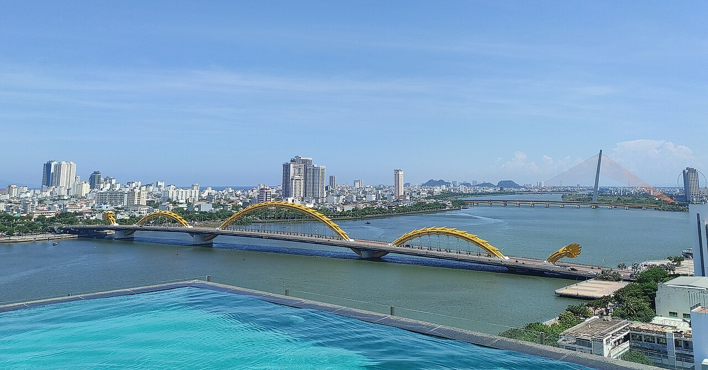

VNFINDER
Người bạn đồng hành cùng bạn khám phá Việt Nam
từ địa đầu Hà Giang đến mũi Cà
Mau.
Vì sao chọn Việt Nam?
Một điểm đến với muôn vàn sắc thái, nơi truyền thống hòa quyện cùng nhịp sống hiện đại.
Cảnh quan ngoạn mục
Từ những đỉnh núi mù sương ở Sa Pa đến vịnh Hạ Long kỳ vĩ và những bãi biển cát trắng trải dài.
Ẩm thực đa dạng
Nổi tiếng toàn cầu với sự cân bằng hoàn hảo của hương vị chua, cay, mặn, ngọt trong từng món ăn.
Con người nồng hậu
Sự hiếu khách và nụ cười thân thiện của người dân địa phương luôn để lại ấn tượng khó phai.
Di sản phong phú
Sở hữu 8 di sản thế giới được UNESCO công nhận, minh chứng cho bề dày văn hóa và lịch sử.
Chi phí hợp lý
Trải nghiệm du lịch chất lượng cao, từ bình dân đến xa xỉ, với mức giá vô cùng phải chăng.
Lịch sử hào hùng
Những câu chuyện lịch sử ngàn năm dựng nước và giữ nước hiện diện trong từng di tích, đền đài.
Khám phá vùng miền
 Miền Bắc
Miền Bắc
Vịnh Hạ Long
Gần 2.000 hòn đảo đá vôi nhô lên từ mặt nước ngọc bích tạo nên một kỳ quan thiên nhiên thế giới ngoạn mục.
 Miền Nam
Miền Nam
Đảo ngọc Phú Quốc
Thiên đường nghỉ dưỡng với những bãi biển cát trắng trải dài, nước trong vắt và hải sản vô cùng phong phú.
 Miền Bắc
Miền Bắc
Khu di tích Đền Hùng
Đất tổ thiêng liêng, cội nguồn của dân tộc Việt Nam với tín ngưỡng thờ cúng Hùng Vương trải qua hàng ngàn thế hệ.
 Miền Trung
Miền Trung
Phố cổ Hội An
Rực rỡ đèn lồng về đêm, mang vẻ đẹp hoài cổ và lãng mạn của một thương cảng sầm uất thế kỷ 17.
 Miền Nam
Miền Nam
TP. Hồ Chí Minh
Siêu đô thị năng động, sầm uất bậc nhất với sự giao thoa văn hóa đa dạng và những tòa nhà chọc trời hiện đại.
 Miền Trung
Miền Trung
Bảo tàng Quang Trung
Tọa lạc tại Bình Định, nơi lưu giữ những di tích thiêng liêng về phong trào khởi nghĩa nông dân Tây Sơn oai hùng.
Cố đô Huế
Mang không khí trầm mặc với hệ thống lăng tẩm, đại nội cung đình nguy nga và nhã nhạc cung đình đặc sắc.
 Miền Bắc
Miền Bắc
Thị trấn Sa Pa
Chìm trong sương mù với những thửa ruộng bậc thang kỳ vĩ và bản sắc văn hóa độc đáo của đồng bào dân tộc.
 Miền Nam
Miền Nam
Chợ nổi Cần Thơ
Vựa lúa của miền Tây Nam Bộ, nổi tiếng với văn hóa chợ nổi trên sông vô cùng nhộn nhịp vào buổi sáng sớm.
 Miền Nam
Miền Nam
Địa đạo Củ Chi
Hệ thống hầm ngầm kỳ tích của quân dân Việt Nam trong thời kỳ kháng chiến, biểu tượng của sự kiên cường, bất khuất.
 Miền Bắc
Miền Bắc
Bảo tàng Điện Biên Phủ
Công trình độc đáo mang hình dáng chiếc mũ nan, nơi lưu giữ bức tranh panorama tái hiện chiến dịch Điện Biên Phủ hào hùng.
 Miền Trung
Miền Trung
Thành phố Đà Nẵng
Thành phố đáng sống với những cây cầu độc đáo, bãi biển tuyệt đẹp và khu du lịch Bà Nà Hills nổi tiếng.
Miền Bắc - Cội nguồn văn hóa
Nơi lưu giữ những tinh hoa văn hóa ngàn năm, từ đền đài miếu mạo cổ kính cho đến những kỳ quan thiên nhiên thế giới ngoạn mục và ruộng bậc thang hùng vĩ nơi núi rừng Tây Bắc.

Miền Trung - Bản hùng ca biển bạc
Mảnh đất đầy nắng và gió mang trong mình sức sống mãnh liệt. Nơi những bãi biển xanh trong hòa quyện cùng những di sản văn hóa thế giới trường tồn cùng thời gian.
Miền Nam - Vùng đất hào sảng
Bao bọc bởi mạng lưới sông ngòi chằng chịt, miền Nam mang nét văn hóa phóng khoáng, nhịp sống hiện đại đan xen với vẻ đẹp bình dị của vùng quê miệt vườn.
Điểm đến nổi bật
Những địa danh không thể bỏ lỡ trong hành trình khám phá Việt Nam.
Hà Nội
Trái tim của đất nước, nơi lưu giữ những nét đẹp cổ kính ngàn năm văn hiến cùng nhịp sống hối hả.
Hội An
Đô thị cổ hoài niệm bên dòng sông Hoài thơ mộng, rực rỡ ánh đèn lồng.
Hạ Long
Kỳ quan thiên nhiên thế giới với hàng ngàn hòn đảo đá vôi kỳ vĩ.
Cần Thơ
Trải nghiệm văn hóa chợ nổi sầm uất trên sông nước miền Tây.
Bình Định
Vùng đất võ trời văn, thiêng liêng với bề dày lịch sử và cảnh sắc vạn người mê.

Gia Lai
Khám phá vẻ đẹp hoang sơ của Biển Hồ và những đồi chè bạt ngàn.
TP. HCM
Siêu đô thị năng động, sầm uất bậc nhất với nhịp sống không bao giờ ngủ.
Di sản văn hóa
Tự hào với những giá trị văn hóa phi vật thể và truyền thống lâu đời được thế giới công nhận.
Nhã nhạc cung đình Huế
Âm nhạc cung đình tao nhã, bác học thời phong kiến.

Dân ca Quan họ
Những làn điệu giao duyên mượt mà đằm thắm của liền anh, liền chị.

Đờn ca tài tử
Nghệ thuật đàn ca mộc mạc, phóng khoáng của người dân miệt vườn.
Tranh Đông Hồ
Dòng tranh mộc mạc khắc gỗ, phản ánh chân thực đời sống sinh hoạt.

Cồng chiêng Tây Nguyên
Âm vang đại ngàn linh thiêng, nhịp đập kết nối cộng đồng các dân tộc.
Hát Ca trù
Nghệ thuật diễn xướng thính phòng độc đáo, tinh hoa âm nhạc Bắc Bộ.
Trải nghiệm tiêu biểu
Chạm vào linh hồn của một quốc gia qua những trải nghiệm chân thực.

Vẻ đẹp truyền thống
Khám phá nét duyên dáng của tà áo dài và những giá trị văn hóa đậm đà bản sắc dân tộc.

Tinh hoa ẩm thực
Thưởng thức bát phở nóng hổi hay chiếc bánh mì giòn rụm trên góc phố.

Thiên nhiên hùng vĩ
Chinh phục những ngọn núi mây mù giăng lối tại vùng cao Tây Bắc.
Nhịp sống sông nước
Lênh đênh trên chiếc xuồng ba lá, khám phá nét văn hóa miền Tây.
Di sản cổ kính
Lạc bước giữa những mái ngói rêu phong và bức tường vàng nhuốm màu thời gian.
Kỳ quan thiên nhiên
Chiêm ngưỡng vẻ đẹp tuyệt mỹ của những hang động hàng triệu năm tuổi.

Bắt đầu hành trình của bạn ngay hôm nay
Lưu giữ những kỷ niệm khó quên tại đất nước hình chữ S xinh đẹp.
Lên kế hoạch chuyến điBản đồ Việt Nam
Nhấp vào một tỉnh, thành để xem toàn bộ xã, phường, đặc khu — rồi nhấp tiếp để xem bản đồ chi tiết khu vực đó.
Dữ liệu ranh giới hành chính theo cơ cấu 34 tỉnh/thành · xã/phường/đặc khu áp dụng từ 01/07/2025.
Trợ Lý Du Lịch AI: Kết Nối Quy Nhơn – Gia Lai
Tự động phân cụm lịch trình tối ưu theo thực tế địa lý giữa Biển Đảo & Cao Nguyên
Khoảng cách địa lý khá xa
Lịch trình dưới 3 ngày nhưng bạn chọn trải nghiệm cả Biển (Bình Định) & Cao Nguyên (Gia Lai). Khoảng cách giữa 2 nơi là ~160km qua QL19 (hơn 4h di chuyển). Hãy cân nhắc tăng số ngày hoặc tập trung vào một vùng!